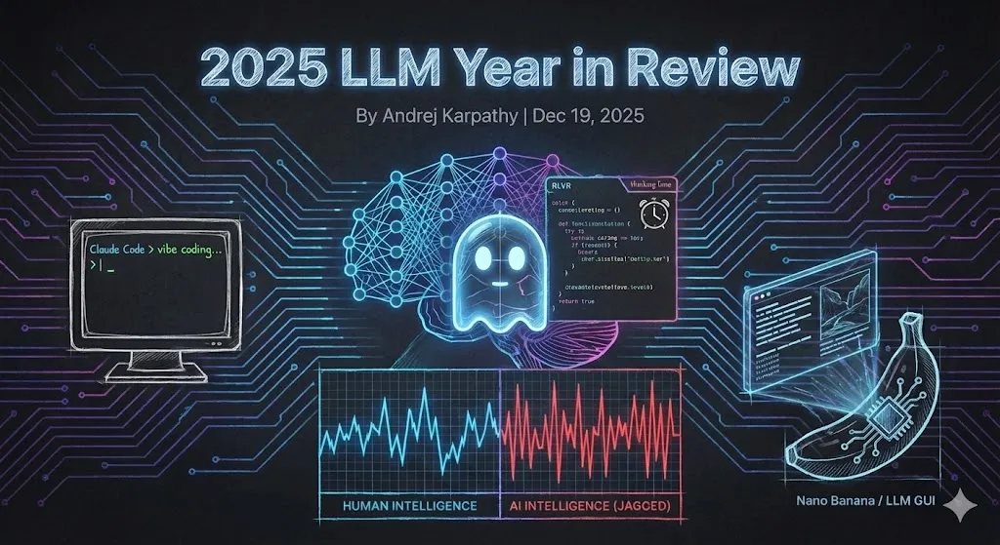
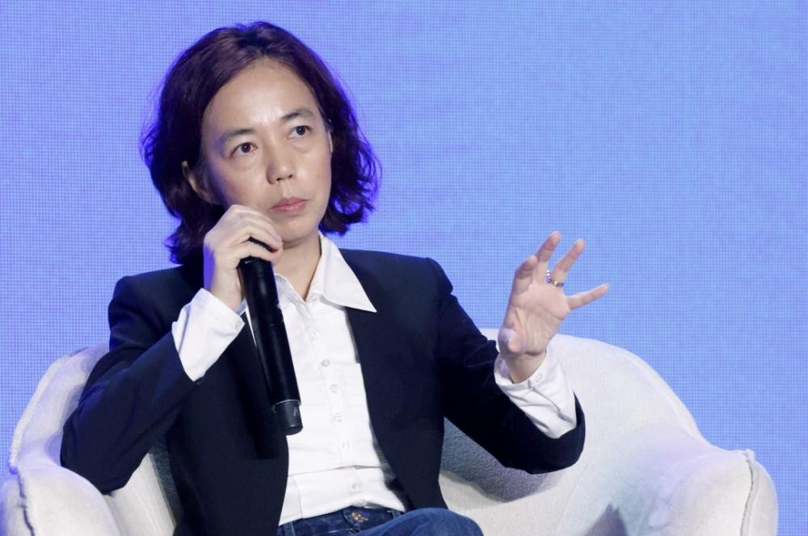

AI领域精选最新文章



“我试了 NotebookLM 学习法后，彻底抛弃传统学习方式。”
AI 工具的价值从来不是帮我们偷懒，而是帮我们更好地思考、理解。使用 NotebookLM 重构你的学习方式。
2025-12-16大语言模型发展现状
主流大语言模型介绍
GPT系列
OpenAIGPT（Generative Pre-trained Transformer）是 OpenAI 开发的一系列大语言模型，是公认的综合能力最强的通用模型之一。
主要特点：
- ⭐ 强大的自然语言生成能力
- ⭐ 广泛的多模态应用场景
- ⭐ 持续的模型迭代更新
最新模型：
- 🍭 GPT-5.2：2025.12.11发布
- 🍭 GPT-5.1：2025.11.12发布
- 🍭 GPT-5：2025.08.07发布
Claude系列
AnthropicClaude 是 Anthropic 开发的大语言模型，在编程能力上成为首选。
主要特点：
- ⭐ 稳定、可控、高质量的代码编写能力
- ⭐ 更强的安全性和可控性
- ⭐ 良好的多轮对话能力
最新模型：
- 🍭 Claude Opus 4.5：2025.11.24发布
- 🍭 Claude Haiku 4.5：2025.10.15发布
- 🍭 Claude Sonnet 4.5：2025.09.29发布
Gemini系列
GoogleGemini 是 Google 开发的多模态大语言模型，在科研和严肃推理任务中表现突出。
主要特点：
- ⭐ 原生多模态支持
- ⭐ 强大的推理能力
- ⭐ 与 Google 生态深度集成
最新模型：
- 🍭 Gemini 3 Deep Think：2025.12.04发布
- 🍭 Gemini 3 Pro：2025.11.18发布
- 🍭 Gemini 3 Flash：2025.11.17发布
DeepSeek
深度求索DeepSeek是由杭州深度求索人工智能基础技术研究有限公司开发的大语言模型，专注多模态AI技术研发。
主要特点：
- ⭐ 对中文语境具有良好适配度
- ⭐ 高效训练与低成本推理优势
- ⭐ 开源项目，供研究社区使用
最新模型：
- 🍭 DeepSeek V3.2：2025.12.01发布
- 🍭 DeepSeek-V3.1：2025.08.19发布
文心一言
百度文心一言是百度开发的大语言模型，在知识增强、检索增强、对话增强方面具有丰富创新。
主要特点：
- ⭐ 中文理解能力强
- ⭐ 丰富的中文知识语料库
- ⭐ 广泛的行业应用
最新模型：
- 🍭 文心 5.0 Preview：2025.12.03发布
- 🍭 文心 4.5 Turbo：2025.04.25发布
通义千问
阿里巴巴通义千问是阿里巴巴开发的大语言模型，在学术科研上应用广泛，常用于测评任务。
主要特点：
- ⭐ 开源模型多，使用效果好
- ⭐ 企业接入多，安全性强
- ⭐ 多模态应用成本低
最新模型：
- 🍭 Qwen3-Omni-Flash：2025.12.01发布
- 🍭 Qwen3系列：2025.06.17发布
未来发展趋势
1. 多模态融合
未来的大语言模型研究热点将会是多模态能力的高质量实现，对文本、图像、音频、视频等多种模态进行无缝交互。
2. 轻量化与高效化
对知识蒸馏和教师-学生模型技术的实现将更加重要，使得大语言模型能够在更多下游设备上更好地运行。
3. 垂直领域专业化
通用大语言模型将与各个领域深度融合，形成专业化的垂直领域大模型，在医疗、法律、金融、古籍等领域充分发挥其作用。
4. 安全性与可控性
随着人们对 AI 的重视和普及应用，隐私问题将会得到社会的更多关注。如何权衡安全问题将是一项挑战。